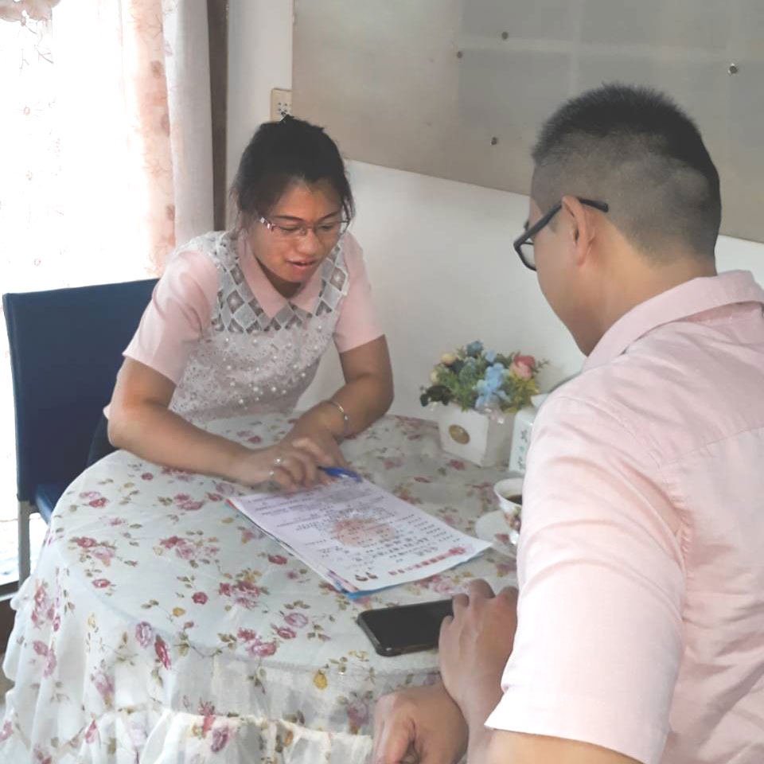
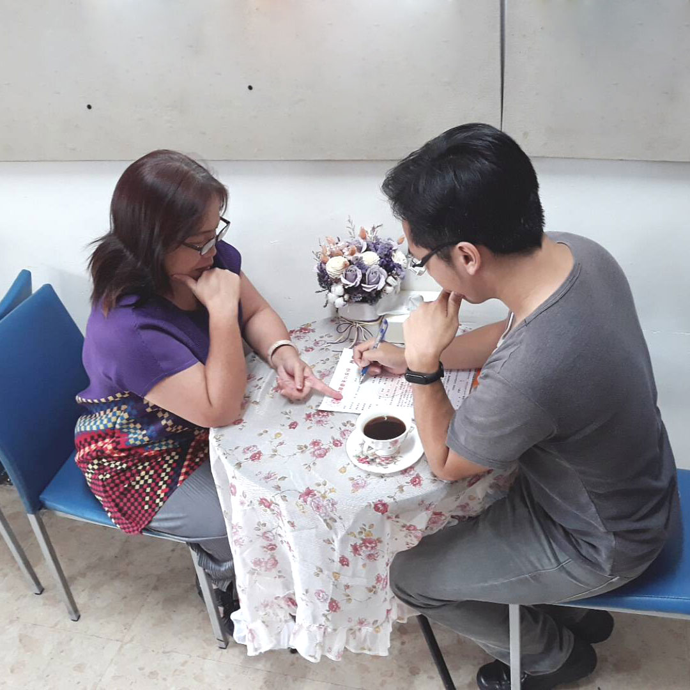
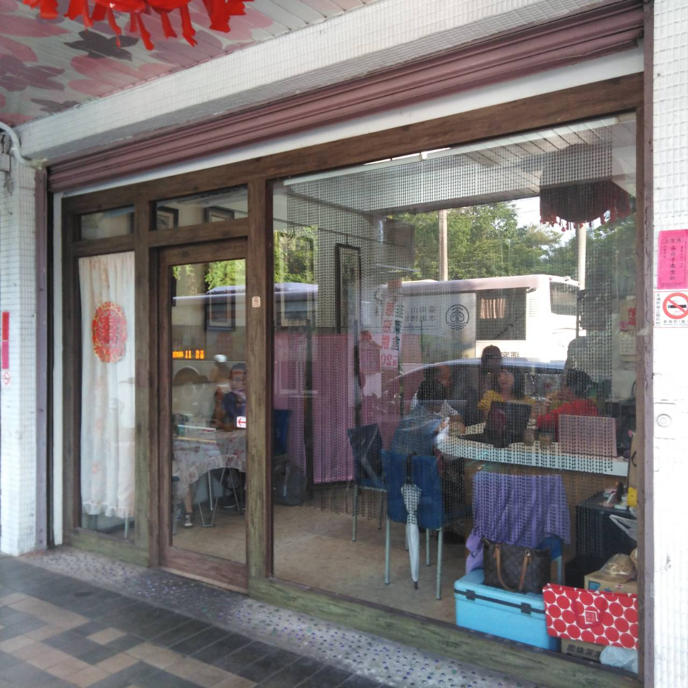
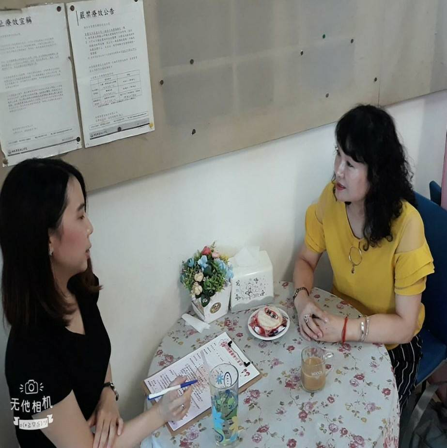

22歲於婚紗公司當店長為新人服務，
每天接觸喜氣洋洋的人事物很開心，
個性古道熱腸、開朗豪氣，也是位大辣辣的性情中人，
之前都是兼職介紹，5年前母娘賦予了任務，
要我「今生圓滿牽合100對佳偶」交旨，
而今年找到了聚點，方便讓新人來報名，
安排一對一相見歡。
喜娘薛姐（瑪莎蔻）經兩性專家饒夢霞教授授課指導，
我都把新人當成親人般在找對象的心態，嚴謹把關。
我堅持重質不重量的原則，幫新人找適合的對象。
喜娘薛姐（瑪莎蔻）至今服務數年，
到目前為止新人婚姻圓滿度佳，
值得大家的推薦、肯定與信賴。
薛姐～也有從事當現成的媒人服務，包含提親等服務：
提親、婚禮細節洽詢
協助溝通安排、迎娶當天的媒人服務
薛姐平價收費，專業服務，
與助理琪琪用心媒合，把細節重點做好做滿。
牽線花絮
- 
- 
- 
- 

喜娘據點
為了方便讓新人來找我報名，好安排相見歡，
所以分租了台南市永康區的店面，
停車方便，交通也方便。
營業時間：周一至周日下午2點～晚上9點
固定周一公休日
（非營業時間請勿造訪！）
（請事先電話預約，下雨天、颱風天公休）
必須經過面談報名通過才會正式收件，進行適合的安排。
據點沒有華麗的裝潢，但是有滿屋子的正能量，
這裡提供一個簡單讓雙方彼此認識相見歡的地方。
據點小而溫馨，但服務初衷跟熱忱始終如一，
歡迎有緣份的新人過來面談報名，
讓薛姐有機會幫你們牽起紅線。
【永康火車站】
搭車來，由專人接送
位於永康探索公園附近(永華路578號)
營業時間：周一至周日下午2點～晚上9點
固定周一公休日
（非營業時間請勿造訪！）
（請事先電話預約，下雨天、颱風天公休）
聯絡電話：0916542297 / 0910785250